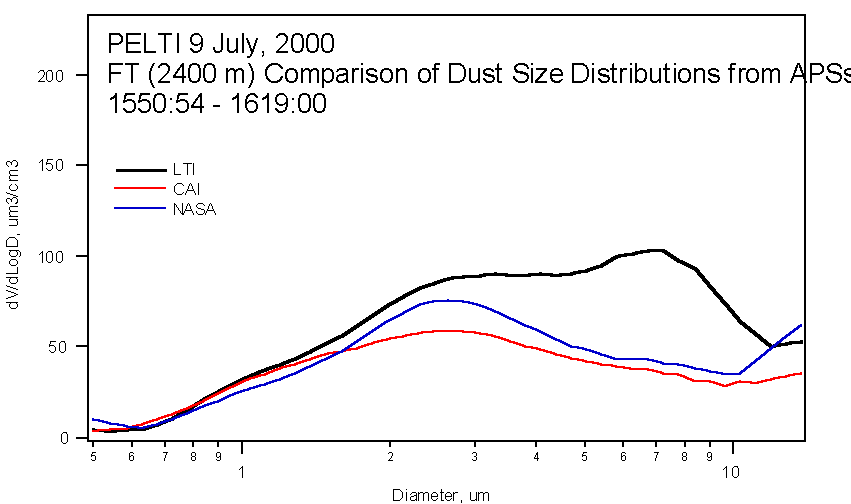
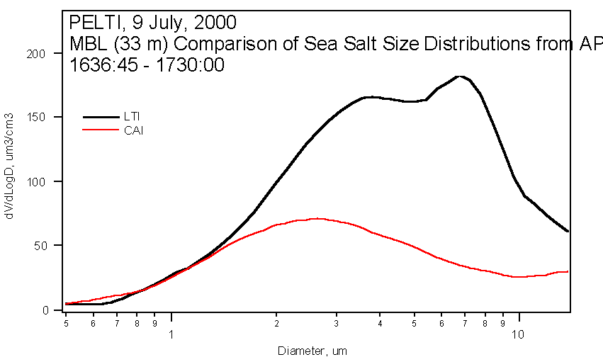
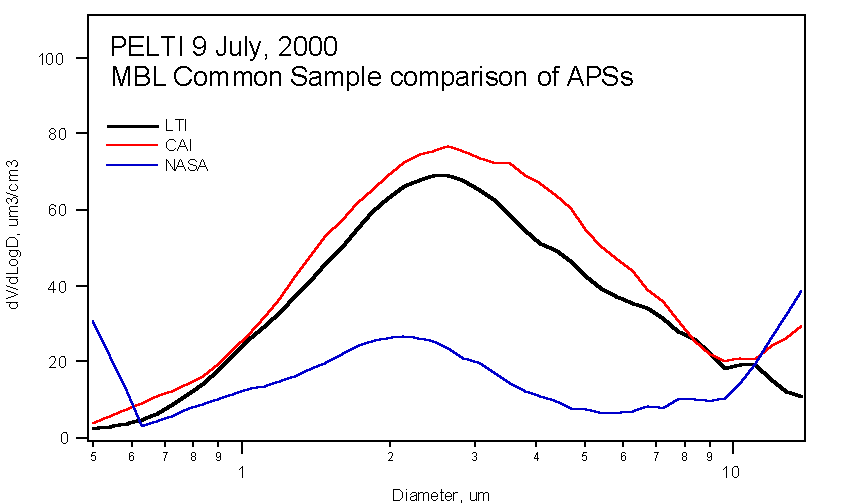

PELTI Flight Report for RF02 - 9 July, 2000
All times CUT
1501 Takeoff & start of sounding to 10,000’
Considerable haze. The PRIDE group reports optical depths of 0.2 – 0.3 due to dust. The lower mixed layer was pretty shallow, perhaps less than 1000’. There was a gradual decrease in dew point up to 6500’ where there was a sharp dryout. We would choose to fly a FT leg in the bottom of this dry layer.
1515 At 10,000’ and started descent to 7500’
1519 Start of eastbound leg at 7500’
Several samplers were not started at the beginning of the leg, but all were functioning by halfway through. (An extra pump installed to achieve isokinetic flow for the LTI froze and threw the breakers that were powering those devices.) The LTI total flow was about 92% of isokinetic, based on the LFEs (the thermal mass flowmeters suggest it was a bit closer to isokinetic), and it was kept laminar the whole flight.

As the APS comparison above shows, the LTI consistently passed more supermicron particles during this FT sample leg than the CAI and the NASA solid diffuser. (The latter operated similarly to the CAI, but its APS began to drift down in concentration later in the flight, so its data is not shown for the next leg.) Some of this is no doubt due to the enhancement of the largest particles by the curving streamlines in the LTI, but much is no doubt due to the loss of particles in the CAI and the solid diffuser. The DU group will do Fluent modeling to compute the enhancement vs size in the LTI, while the UH group will make lab measurements (monodisperse uranine particles from a VOAG) to determine the size-dependent losses in the tubing behind the LTI and the other inlets. The bump may be the combination of enhancements and tubing losses, both of which are quantifiable.
1619 End of 7500’ leg, sounding to 100’
1635 Start of 100’ westbound leg
We flew this MBL leg at 220 knots IAS (rather than the usual 200 knots) because the attack angle is under 2 deg at 220 knots. We had learned on the ferry from Miami to St. Croix (STX, our first ever tests at 1 Atm) that the turbulent wake from the forward CAI strut impacts the LTI inlet at attack angles above about 2 deg. Flying a bit faster levels the plane and allows the LTI to miss that wake. This strut is a piece that will not be used on later projects if the LTI makes the CAI dispensable.
The wind speeds on this low-level leg were between 7 and 9 m/s, causing a few whitecaps to be visible. This meant that there was measurable sea salt for us to use as a test aerosol. As the figure below shows, the large-particle difference between the LTI and the CAI was greater in the MBL than in the FT. This could be because dry mineral particles have a significant probability of bouncing off the inner inlet walls and being re-entrained into the flow, while sea salt particles that impact on the walls never come off. Clarke and Howell had inferred a similar behavior in the CAI by comparing CAINE-2 results with INDOEX dust-layer data that was constrained by Valero and Bucholtz’s AOD profile across the layer.

At both altitudes, however, it is clear that the particle concentrations above 2-3 um are definitely greater in the LTI sample flow. We have noted this same behavior on all our ferry flights as well.
1715 Terminated inlet comparison but remained at 100’
To gauge the significance of the observed differences in APS data, we ran all the APSs on the same sample flow, which happens to come from the CAI. The APS on the NASA solid diffuser inlet is clearly low, since it began losing sensitivity during the earlier MBL sample. This may be due to a flow rate change that has not yet been diagnosed.

1745 End of 100’ leg
1801 Touchdown at STX
A comparison between the LTI APS and NCAR’s wing-mounted FSSP 300 looks quite promising, but is not yet vetted enough for broadcast. The comparison between that 300 and the internal one, however, is not so clear-cut. The 300’s will be exchanged for the next flight (probably 11 July, since RAF crew duty limits require a down day) to see if a calibration difference is responsible for the curious results.
All filters and TAS extracts are being sent off for analysis, which may or may not be completed prior to the end of the deployment. With the exception of Clarke’s FSSP-300, most equipment is functioning well. The total nephelometers on all inlets gave sensible results on the common sample comparison, but the submicron one from the LTI read an order of magnitude high and seems to be malfunctioning. In general, the LTI neph records higher scattering than the other two when behind their respective inlets.
Barry Huebert
St. Croix, Virgin Islands
9 July, 2000